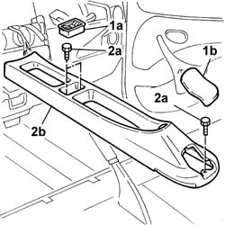
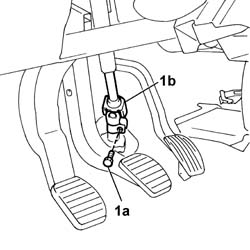
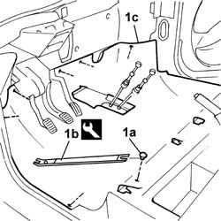

7040L17 passenger compartment floor front carpet - r r
- Path
- Procedures > 70 FITTINGS > 7040 BODYSHELL INTERIOR TRIMS AND FITTINGS > 7040L cabin floor covering > 7040L17 passenger compartment floor front carpet - r r
- Kind
- repair procedure (removal / refitting; the operation number is the code)
- Applies to
- all engines; all production periods
- Interactive page
- https://sloeber94.github.io/elrnDB-fDbl/en/#/2585154
Applies to: all engines; all production periods; only with equipment: Doblò trim level
 Removing
Removing
 Refitting
RefittingDisconnect the battery negative terminal.
Op. 5580C18 AIR BAG MODULE - R+R
Op. 4110A11 STEERING WHEEL - R+R FOR REPLACEMENT OR CHECK FOR VERSIONS WITH AIR BAG
Op. 7040A26 STEERING COLUMN TRIM - R+R
Op. 5550A12 COMPLETE STALK UNIT - R+R FOR VERSIONS WITH AIR BAG
Op. 4110A31 SUPPORT WITH STEERING CONTROL SHAFTS - R.R. FOR VERSIONS WITH AIR BAG
Op. 7040A60 UNDERDASHBOARD TRIM - R.R.
Op. 5010C31 CENTRE AIR VENT IN DASHBOARD (ONE) LH OR RH - R.R
Op. 7065C10 AIR CONDITIONING CONTROL PANEL - R+R
Op. 7040L40 FRONT DOOR HOUSING RUNNING BOARD (ONE), LEFT OR RIGHT - R.R.
Op. 5505A10 ELECTRICAL JUNCTION UNIT - R+R
Op. 7040A10 INSTRUMENT PANEL TRIM - R.R.
Op. 2125C16 GEAR HAND LEVER SUPPORT - R.R.
Op. 2125C14 GEAR HAND LEVER MOUNT BRACKET (ONE ) - R.R.
Op. 7045A10 FRONT SEAT (ONE), LEFT OR RIGHT - R.R.
1. Remove the coin holder (1a) and the protective cap (1b) behind the handbrake lever.
2. Undo the fixing bolts (2a) and remove the tunnel cover (2b).

Applies to: all engines; all production periods; only with equipment: Doblò trim level
1. Undo the bolt (1a) and disconnect the universal joint (1b) for the steering column.

Applies to: all engines; all production periods; only with equipment: Doblò trim level
1. Extract the retaining plugs (1a), using the tool (1b) and remove the front floor carpet (1c).
 | Name | Country |
|---|---|---|
1b | Scraper blade | 1.878.077.000 |

Applies to: all engines; all production periods; only with equipment: Doblò trim level
Refitting
RemovingFit the carpet and secure it using the retaining plugs.
Tighten the bolt fixing the universal joint to torque.
 | Fastening | Component | Ø | Value (daNm) |
|---|---|---|---|---|
- | Bolt | STEERING SHAFT JOINT FASTENERS | M8 | 3.7 |
Fit the tunnel cover and secure it using the bolts.
Fit the coin holder in its housing and the protective cap behind the handbrake lever.
Op. 7045A10 FRONT SEAT (ONE), LEFT OR RIGHT - R.R.
Op. 7045A10 FRONT SEAT (ONE), LEFT OR RIGHT - R.R.
Op. 2125C14 GEAR HAND LEVER MOUNT BRACKET (ONE ) - R.R.
Op. 2125C16 GEAR HAND LEVER SUPPORT - R.R.
Op. 7040A10 INSTRUMENT PANEL TRIM - R.R.
Op. 5505A10 ELECTRICAL JUNCTION UNIT - R+R
Op. 7040L40 FRONT DOOR HOUSING RUNNING BOARD (ONE), LEFT OR RIGHT - R.R.
Op. 7065C10 AIR CONDITIONING CONTROL PANEL - R+R
Op. 5010C31 CENTRE AIR VENT IN DASHBOARD (ONE) LH OR RH - R.R
Op. 7040A60 UNDERDASHBOARD TRIM - R.R.
Op. 4110A31 SUPPORT WITH STEERING CONTROL SHAFTS - R.R. FOR VERSIONS WITH AIR BAG
Op. 5550A12 COMPLETE STALK UNIT - R+R FOR VERSIONS WITH AIR BAG
Op. 7040A26 STEERING COLUMN TRIM - R+R
Op. 4110A11 STEERING WHEEL - R+R FOR REPLACEMENT OR CHECK FOR VERSIONS WITH AIR BAG
Op. 5580C18 AIR BAG MODULE - R+R
Connect the battery negative terminal.
Topics linked from this page (14)
- 2125C14 gear hand-lever mount bracket (one)- r r
- 2125C16 gear hand-lever - r r
- 4110A11 steering wheel - r+r for replacement or check for versions with air bag
- 4110A31 Steering control shaft SUPPORT - R.R. for versions with Air Bag
- 5010C31 centre air outlet on facia one lh or rh r r
- 5505A10 electrical junction unit - r+r
- 5550A12 complete stalk unit - r+r for versions with air bag
- 5580C18 air bag module - r+r
- 7040A10 instrument facia trim - r+r
- 7040A26 steering column trim - r+r
- 7040A60 under facia trim - r+r
- 7040L40 front compartment scuff strip - r r
- 7045A10 l/h or r/h front seat (one) - r+r
- 7065C10 air conditioning control panel - r+r